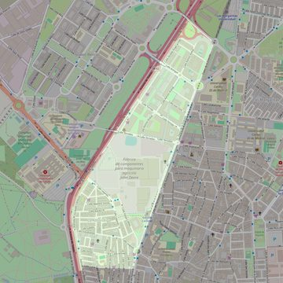

San Rafael Arcángel
- Arciprestazgo
- Getafe
- Población
- Getafe
- Dirección postal
- Pza. Rufino Castro, s/n
- Código postal
- 28904
- Extensión
- 0,80 km² (80 ha)
- Teléfono
- 916 861 289
- Correo electrónico
- sanrafaelarcangel-getafe@diocesisgetafe.es
- Información demográfica
- De la parroquia · De la población (Getafe) · Del arciprestazgo (Getafe)


Descargar mapaLímites según decreto
“Partiendo de la confluencia del ferrocarril Madrid-Badajoz con la calle Buenavista, arrancan en, dirección oeste, por el eje de la calle Buenavista y el eje de la calle Cisne hasta la carretera N-401; continúan por el eje de la N-401, en dirección noroeste y noreste, hasta la Avenida de las Ciudades; siguen, en dirección sureste, por el eje de la Avenida de las Ciudades hasta el encuentro con el ferrocarril Madrid-Badajoz; continúan por el eje de las vías de dicho ferrocarril y en dirección suroeste hasta el encuentro con la calle Buenavista, punto de partida.” (Decreto del 17 de febrero de 1998; B-O Mar-98)